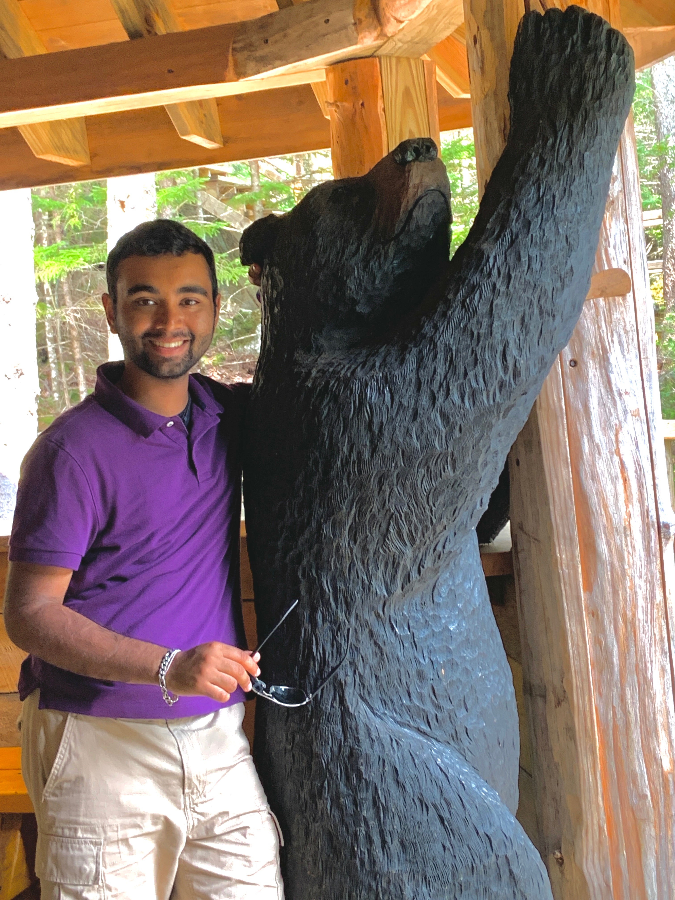

About
My name is Pratham Patel and I am a Sophomore at the University of Pittburgh. Outside of classes, I love to read, solve puzzles, work my mind, workout, and go on runs. I am currently studying Computer Science with a minor in Chemistry. I love a good challenge, whether that's in the form of a math question or a puzzle or if it's in the form of a CS project, I'll get the job done. I have created this website as a way to showcase my skills, my interests, my goals, what I have accomplished, and most importantly, myself.
Projects
HabitsTrack
Inspired by Habitica, I created a terminal-based system that rewards you with 'gold' for being productive. You can spend this gold for recreational activities or to feel less guilty about your indulgances.
Email Client
A program to mass-email a customized email to multiple people with a personal flair included. The user can add the recipients name or any other information through a CSV.
Experience
Intern at PNC

I also had the opportunity to spend a summer as an intern at PNC bank. I was a part of the Enterprise Data Risk Management (EDRM) Strategies Team. For 10-weeks, I was placed on this team in order to collaborate, present, identify, report, and manage risks that were surrounding the data. Our main objective was to effective manage and mitigate risks surrounding incomplete and inaccurate data. I assisted new programs set out by PNC regarding data use, data risks, and data quality. I worked heavily with the Analytics Competency Center and Model Risk Management throughout my various projects. My main project was to help collect and reconcile data ahead of an AI/ML audit that was coming in August 2022. I also played an integral part in chartering a new pilot program to keep track of which LOBs are using which platforms. We heavily leveraged database-related technologies such as Excel, Hadoop, and some SQL.
Research Assistant

I am currently a Research Assistant under Dr. Hansruedi Mathys. We currently work with a dataset provided by Rush University, where we analyze GigaBytes of data and try to find out more about Alzheimer's Disease. We are currently trying to understand the cellular and molecular underlyings of AD and why certain people have a natural resistance to it. I have been working under Dr. Mathys since Summer 2021 and have the opportunity to lead my own project within his research. I am also in the process of becoming a published co-author with Dr. Mathys. I worked with other students and fellows in order to develop my own python script analyzing the presence of senescent (toxic) cells. Other than that project, we have developed and modified many of our own/others scripts as this lab is a mix between computational biology and neuroscience.
Code Ninjas

I had the opportunity to teach young children how to create video games in JavaScript. We used Code Ninja's Game Development Platform (GDP). I primarily worked with children between the ages of 5 and 13 with a focus on the older children who were creating more complex video games. I collaborated with the other Senseis and made sure that all of the children were being helped but also learning. As this was during COVID, we had to introduce a hybrid environment where certain students would be online only whereas others would come in-person. I dealt mainly with the in-person children and was able to help them hands-on.
Accomplishments
AI Foundations
LinkedIn Learning, Jan. 2022I learned the fundamental ideas behind current AI technologies. I was introduced to the different forms of "Learning" such as supervised or unsupervised. Along with a theoretical introduction, I was also able to understand the current applications and limitations of AI and the research ongoing to address these issues.
Python Data Analysis
NASBA, Jul. 2022This course is accreddited by NASBA where I earned 1 Continuing Education Unit. I learned the fundamentals of Python Data Analysis, including an in-depth explanation of NumPy, MatPlotLib, and Pandas. I completed the course via LinkedIn Learning and passed the final exam with a score higher than 70%, earning me the associated credits.
Risk Management Frameworks
American Banker's Association, Jun. 2022I learned the fundamental ideas behind current AI technologies. I was introduced to the different forms of "Learning" such as supervised or unsupervised. Along with a theoretical introduction, I was also able to understand the current applications and limitations of AI and the research ongoing to address these issues.
Social Psychology
Wesleyan University, Aug. 2020I passed this course online with honors after achieving a final exam score greater than 85%. This class covered the basics of social psychology along with its applications, different schools of thought, its role in current psychology, and how we can use it on a day-to-day. This course has enhanced my understanding of psychology along with my personal EQ.
Hobbies
Outside of school, I love to keep myself busy. I am a passionate amateur photographer. I run an instagram account where I share my photos with the world, @2p_snaps. I use lightroom to edit my photos, primarily focusing on landscape, flowers, urban areas, and the beautiful bridges of Pittsburgh. Although I've ammassed a small following on Instagram, my main inspiration comes from the fact that I do this for fun and I love to see how my pictures have grown in style. I've included some of the picture I've taken below :). I love to let my creativity run free, expressing it through my photographs, writing, and anything else that makes me feel free.
Contact Me
I would love for you to contact me, I'm currently open to Internships, part-time or temporary job offers, or any kind of learning experience. I have linked my GitHub, LinkedIn, email, and you're already at my personal website. I wish to eventually join a company as a Software Developer, but I know that there are many applications for my skills and I want to be able to explore my options before committing to a single subfield. Thank you for viewing my website all the way through. I hope I was able to showcase both myself and my skills through this page, feel free to contact me for whatever reason and I hope you have a great day.